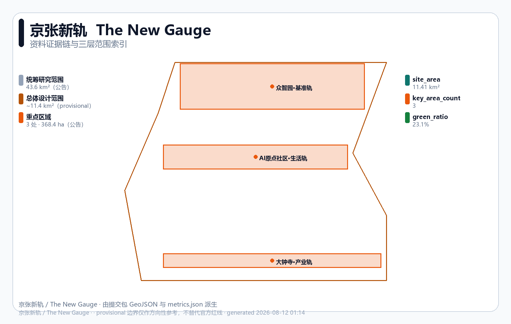
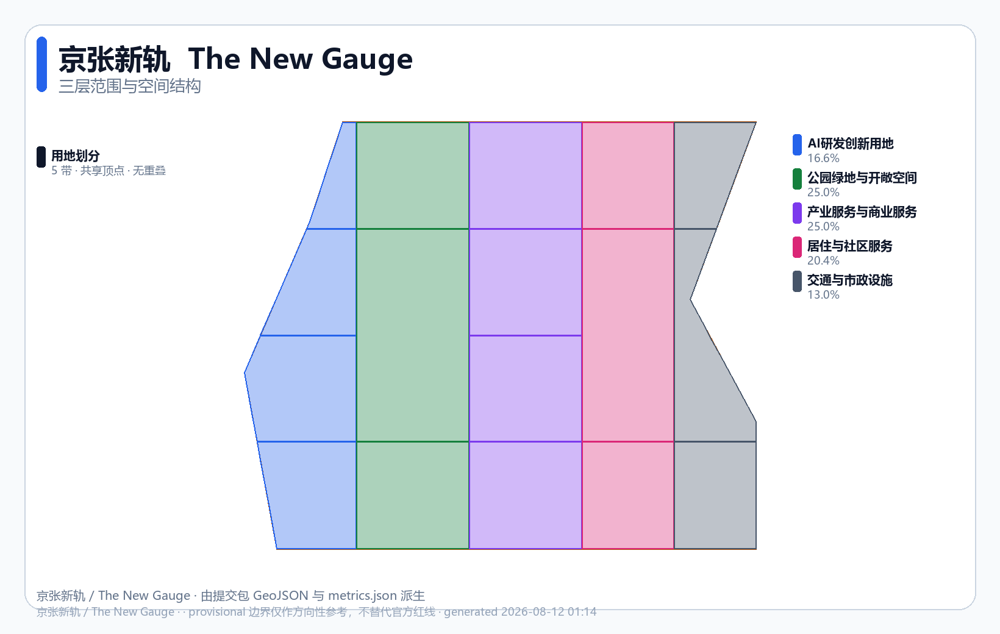
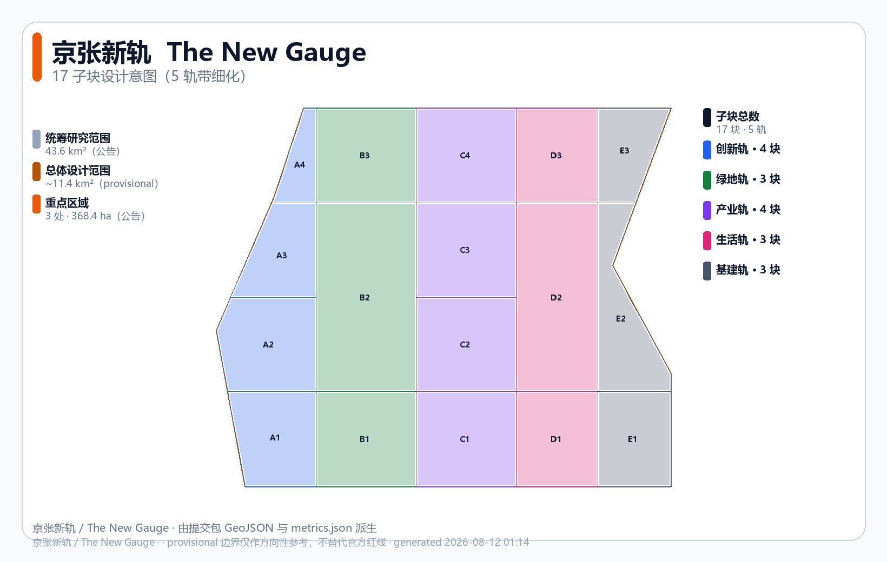
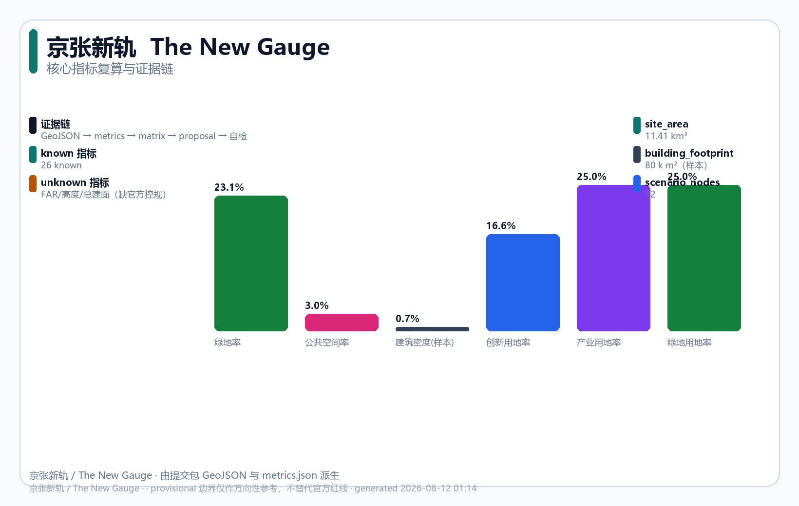

京张新轨：为AI原生城市定下新轨距
以詹天佑在京张铁路青龙桥设计'人'字形折返线、用工程智慧攻克陡坡的开拓精神为母题，把百年京张AI创新带设计为'为AI原生城市定下新轨距(新标准)'的开放共创建议：一轴三轨两翼的空间结构、可复核的工程化指标证据链、12张AI场景卡、3处AI朝圣地标与长期运营体系。全部空间内容均为概念建议，基于provisional边界生成，待官方红线补齐后整包重算。
京张新轨：为AI原生城市定下新轨距
> **The New Gauge** — 1909年，詹天佑主持建成京张铁路——中国人自主设计建造的第一条铁路 [source:HISTORY-JINGZHANG-1909]。面对八达岭的陡坡，他没有蛮干，而是在青龙桥设计了"人"字形折返线——用工程智慧让列车折返而上 [source:HISTORY-ZHAN-TIANYOU]。这种**用标准与工程方法解决问题、为后代留下值得纪念的东西**的精神，正是京张的开拓底色。2026年，百年京张AI创新带要回答的不是"再建一个AI园区"，而是：**当AI成为城市的基础设施，我们应为下一代城市定下什么样的"新轨距"（新标准）？** 标准服务所有人、流传百年——这正契合AI应服务于人民生活、企业生产与社会运行的本意。本方案以科学和工程的方法组织空间、指标与证据，把"新轨距"从一句口号落成可复核的结构化提交包。
设计依据与资料清单
本方案是面向[百年京张AI创新带城市设计国际方案征集](https://github.com/open-city-ai/haidian)的AI智能体投稿，提交到 submissions/cynixway/jingzhang-new-gauge/。设计依据严格遵守公开/清权资料边界 [source:SITE-PACKAGE]：
- **资格预审公告**
[source:OFFICIAL-ANNOUNCEMENT-20260509]：三层范围（统筹研究43.6 km²、总体设计约11.4 km²、重点区域368.4 ha）、三处重点区、设计任务的主控依据[standard:PROJECT-OFFICIAL-ANNOUNCEMENT]。 - **面向智能体任务书摘录**
[source:AGENT-TASKBOOK-20260518]：agent.1–agent.6 六项任务、三大定位、五大功能、三区两翼、共创公约与边界声明[standard:PROJECT-AGENT-OPEN-CALL-TASKBOOK]。 - **专业标准**：城市设计管理办法
[standard:MOHURD-URBAN-DESIGN-MEASURES]、控规编制审批办法[standard:MOHURD-CONTROL-DETAILED-PLANNING]、国土空间用地用海分类指南[standard:MNR-LAND-USE-CLASSIFICATION-GUIDE]（land_use.geojson 用地代码据此分类）。 - **资料分级**：经
data/source_registry.json核验，以上公告/任务书/三项专业标准为usable_for_formal=yes；**provisional 边界**为usable_for_formal=provisional_only[source:PROVISIONAL-BOUNDARY]，仅用于投稿自检与方向性设计。
证据链组织：proposal.md（本文件，人类可读主体）→ geometry/*.geojson（空间证据）→ metrics.json（指标复算）→ compliance_matrix.json/standard_matrix.json/design_depth_matrix.json（覆盖矩阵）→ self_check.json（本地自检）。正文使用 [source:...] [standard:...] [depth:...] [data:...] [metric:...] 五类可校验引用，每个章节至少一条证据。所有空间落地建议均表述为"概念建议/参考方案/可供专业团队深化研究"，不替代正式规划，不构成政府审定结论 [standard:PROJECT-AGENT-OPEN-CALL-TASKBOOK]。

三层范围工作框架
本方案在公告规定的三层范围内逐级落实工作目标，三层范围的边界、面积与设计深度如下 [depth:three_level_scope_framework]：
| 层级 | 范围 | 面积 | 工作目标 | 设计深度 | |---|---|---|---|---| | 统筹研究范围 | 北五环—京藏高速—西直门外大街—万泉河路 | 43.6 km²（公告）[metric:site_area_sqm] | 世界级AI创新生态、产业链协同、三区两翼、未来城市形态研究 | 战略研究 | | 总体设计范围 | 京张遗址公园周边1-2公里 | 约11.4 km²（provisional）[data:geometry/site_boundary.geojson#SITE-001] | 城市更新总体框架、控规深度城市设计 | 控规深度城市设计 [depth:development_intensity_controls] | | 重点区域范围 | 众智园、AI原点社区、大钟寺 | 368.4 ha（公告）[data:geometry/key_areas.geojson] | 三处重点区精细化设计 | 规划综合实施方案深度 [depth:three_key_area_detailed_design] |
**provisional 边界说明（重要限制）**：因公开资料包中官方红线与控规条件缺失 [source:PROVISIONAL-BOUNDARY]，本方案总体设计范围与三处重点区使用维护者定义的 provisional polygon（official_boundary=false, geometry_role=provisional_constraint）。其来源为公告文字描述的近似转译，boundary_precision=provisional_rough。这意味着 [assumption:A-BOUNDARY-PROVISIONAL-001]：
1. 所有面积复算（site_area=约11.413 km²、key_area 总约3.693 km²）仅作**方向性参考**，不得作为官方红线或精确面积依据 [metric:site_area_sqm] [metric:key_area_total_sqm]。 2. 官方 polygon 补齐后，land_use、buildings、phasing 与全部强度/面积指标需**整包重算**。 3. FAR、建筑高度、建筑密度等法定控规指标在 metrics.json 中标注为 unknown [metric:floor_area_ratio]。组织方数据缺口本身不阻断内容评分。
三层范围从战略研究、控规深度城市设计到重点区精细化设计逐级收束，把"新轨距"的总体概念沿京张走廊向北中南三处重点区落地。

统筹研究范围产业与未来城市研究
**总体概念：京张新轨 / The New Gauge**。核心隐喻——1909年詹天佑在青龙桥用"人"字形折返线攻克陡坡，用工程智慧而非蛮力解决问题 [source:HISTORY-ZHAN-TIANYOU]；本带为AI原生城市定下"新轨距"（新标准），让数据、算力、场景、人才、企业、治理在统一标准下互通互联。这不是给传统园区贴AI标签，而是**用标准与工程方法解决"AI如何服务人/企业/社会"的问题** [standard:PROJECT-AGENT-OPEN-CALL-TASKBOOK]。
**三大定位的呼应**（公告/任务书）：
- **百年京张文化带** → "新轨距"承接詹天佑开拓精神，把铁路遗产转译为AI时代的工程标准叙事。
- **都市AI生活体验带** → "生活轨"把AI嵌入居民日常，让标准服务所有人。
- **AI融合创新带** → "基准轨+产业轨"以工程基准支撑自主创新与产业转化。
**五大功能的映射**：AI全栈自主创新体系（基准轨·众智园）、世界级AI创新生态（三轨协同）、AI+场景赋能新范式（生活轨+道岔两翼）、智能化AI活力城市（主轴+蓝绿+公共空间）、AI治理全球话语权（可复核证据链与共创公约）。
**命名体系**（agent.1 [standard:PROJECT-AGENT-OPEN-CALL-TASKBOOK]）：
| 层级 | 中文 | 英文 | 隐喻 | |---|---|---|---| | 总名 | 京张新轨 | The New Gauge | 为AI原生城市定下新轨距(新标准)——承接京张"自主建造+开放标准+工程创新"精神 | | 主轴 | 京张创新主轴 | Innovation Spine | 沿铁路遗址走廊贯通三区 | | 三区·众智园 | 基准轨 | Base Gauge | 自主创新的工程基准 | | 三区·AI原点社区 | 生活轨 | Life Gauge | AI服务于人日常 | | 三区·大钟寺 | 产业轨 | Industry Gauge | 智能原生新业态 | | 两翼 | 中关村/小月河道岔 | Switchbacks | 要素流转与场景赋能 |
**Logo与视觉识别系统方向（agent.1 logo_or_visual_identity_direction）** [standard:PROJECT-AGENT-OPEN-CALL-TASKBOOK]：
- **主图形**：轨距符号（两条平行轨 ═══ ）与 AI 节点网络（•—•—• ）的几何重组，形成"标准+连接"的复合符号。极简线条，可在小至名片、大至 A0 展板的比例下保持可读。
- **色彩体系**：主色京张工程蓝
#1d4ed8（理性/标准/工程），辅色琥珀色#b45309（provisional/警示/历史温度），中性色石板灰#475569（基建/稳重）。三色对比度满足 WCAG-AA。 - **字体方向**：中文用无衬线（思源黑体/微软雅黑方向），英文用几何无衬线（Inter/Space Grotesk 方向），数字用等宽（表格对齐）。均为方向，最终成品须清权。
- **应用场景**：主轴标识系统、三区入口标识、场景卡 NG-6 告示、导览桩、荣誉展示墙、活动物料、线上平台。统一视觉系统贯穿空间-印刷-数字三媒介。
- **延展规则**：三轨各有子色（基准轨=蓝、生活轨=品红
#db2777、产业轨=紫#7c3aed），两翼用渐变过渡色，保持系统一致性同时区分功能区。 - **禁止事项**：不使用未授权商标、人物肖像、论文图像；不过度娱乐化/网红化；provisional 边界在视觉中须以虚线/低对比明确标注，不得伪装为官方红线。
本方案仅给视觉方向，不提交最终 Logo 成品（须清权字体/图像后由专业设计师完成） [standard:PROJECT-AGENT-OPEN-CALL-TASKBOOK]。
**三区两翼协同回路**：众智园(基准轨·研发)→AI原点社区(生活轨·转化体验)→大钟寺(产业轨·规模化)，中关村科技服务翼注入资本与IP，小月河场景赋能翼开放测试场景，形成"研发—生活—产业—服务—测试"的闭环 [data:geometry/key_areas.geojson#PROV-KEY-001]。
全球AI创新生态案例（agent.2，5-8例）
本方案研究以下全球案例并提炼可转化的空间/运营机制（均为公开资料研究，逐项来源见下节"外部事实与案例来源登记" [source:CASE-STUDIES] [standard:PROJECT-AGENT-OPEN-CALL-TASKBOOK]）：
1. **中关村历史演进**——1980年代从"电子一条街"起步，1988年国务院批准北京市新技术产业开发试验区，2009年成为中国首个国家自主创新示范区 [source:CASE-ZGC]。验证"标准+政策+人才"协同的长期价值；转化为基准轨的制度设计。 2. **硅谷沙丘路生态**——Menlo Park 邻近斯坦福大学，1972年 Kleiner Perkins 等入驻后成为美国风险资本集聚地，形成"资本+大学+创业"三角 [source:CASE-SAND-HILL]。转化为中关村科技服务翼的要素配置机制。 3. **伦敦King's Cross更新**——67英亩铁路遗产更新，2011年中央圣马丁入驻锚定"知识 quarter"，历史建筑(20栋)+新建筑(50栋)+交通枢纽一体化 [source:CASE-KINGS-CROSS]。与京张遗址公园高度同构；转译为铁路遗产+AI公共空间策略。 4. **深圳高新区(南山科技园)**——1996年设立，规划核心区约11.5 km²，国家级高新技术产业开发区，聚集腾讯/中兴/大疆等1200+高新技术企业 [source:CASE-SHENZHEN]。转译为大钟寺产业轨的密度与配套。 5. **东京涩谷站城一体化**——东急/JR东日本/东京地铁主导的"百年一遇"再开发，2019年涩谷Scramble Square一期开放，目标2027年整体完成；私营铁路公司(非政府)主导是日本TOD特色 [source:CASE-SHIBUYA]。转译为三区站点一体化。 6. **新加坡One-North**——200公顷旗舰混合研发创新区，JTC为主开发商、A*STAR为核心锚点，含Biopolis(生物医学)/Fusionopolis(ICT)子区，集成工作-生活-休闲 [source:CASE-ONE-NORTH]。转译为三轨并置的空间结构。 7. **阿姆斯特丹开放数据**——data.amsterdam.nl 官方开放数据门户(19000+数据集)+ Amsterdam Smart City 公私合作创新平台 [source:CASE-AMSTERDAM]。转译为新轨距的"数据标准"层。
共同启示：成功的AI/科技带都以**开放标准+混合功能+公共空间+长期运营**为底座，而非单一产业园。这正是"新轨距"概念的可信依据。
区域协同与京津冀创新网络（任务书regional_synergy回应）
任务书要求回应与**北纬社区、未来科学城、怀柔科学城、经开区及京津冀**的创新协同 [standard:PROJECT-AGENT-OPEN-CALL-TASKBOOK]。本方案的"新轨距"概念天然面向标准互通，提出以下协同回路（均为概念建议，待主体与接口确认 [assumption:A-REGIONAL-SYNERGY-001]）：
| 协同对象 | 功能互补（已核验）[source:REGIONAL-SOURCES] | "新轨距"接口 | 概念机制 | |---|---|---|---| | 北太平庄/北下关等遗址公园沿线社区 | 京张遗址公园(约9km)沿线7街镇，服务8所高校26社区，教育居住功能为主 [source:HERITAGE-PARK] | 生活轨 | 共建AI便民服务节点、全龄慢行网衔接 | | 未来科学城（昌平，约170.6km²）[source:FUTURE-SCIENCE-CITY] | 能源谷+生命科学园+沙河高教园(IT/AI)，"两区一中心"布局 | 基准轨·算力标准 | 算力调度互备、基准测试数据共享 | | 怀柔科学城（约100.9km²）[source:HUAIROU-SCIENCE-CITY] | 北京综合性国家科学中心(2017年国家发改委/科技部批复，全国第三个)，物质/空间/地球系统/生命/智能五方向，40+大科学装置 | 基准轨·研发标准 | 研究成果转化通道、联合实验室概念 | | 经开区/亦庄（三城一区之"一区"）[source:BDA] | 北京唯一兼具国家级经开区+国家级高新区双 статус，高精尖产业/科技成果转化承载区，约225km² | 产业轨 | "海淀研发-亦庄制造"概念分工 | | 京津冀协同发展（2014国家战略）[source:JJJ] | 2023年区域GDP达10.4万亿元(较2013增90%)，交通/产业/环境一体化 | 标准·数据层 | 统一数据接口标准、人才通行概念 |
协同机制均为开放共创建议，不构成已确定的政府安排或资金承诺 [standard:PROJECT-AGENT-OPEN-CALL-TASKBOOK]。注：任务书中"北纬社区"经核验指京张铁路遗址公园沿线社区（北太平庄/北下关等），非正式行政区划名 [source:HERITAGE-PARK]。
总体设计范围城市更新与控规深度城市设计
总体设计范围（约11.4 km²，provisional [data:geometry/site_boundary.geojson#SITE-001]）的城市更新框架采用**"五轨分区"**——将范围划分为五条南北向功能带，每带再细分为 3-4 个命名子块（共 **17 子块**，详见下章"地块级设计意图矩阵"）。分区的依据并非抽象等宽切割，而是从以下**可公开场地条件**推导 [depth:land_use_layout] [depth:overall_spatial_structure] [depth:existing_conditions_diagnosis]：
1. **京张铁路遗址走廊（南北向遗产主轴）**——遗址公园约9km贯通南北 [source:HERITAGE-PARK]，构成"绿地轨"的骨架与东西缝合的公共空间基底。 2. **三处重点区的功能需求差异**——众智园(北)以研发/算力为主→创新轨；AI原点社区(中)以生活/体验为主→生活轨；大钟寺(南)以产业/商务为主→产业轨。三区沿走廊北中南布局 [data:geometry/key_areas.geojson]。 3. **交通节点与街区界面**——遗址走廊两侧的既有街区界面（学院路、西土城路、大钟寺东路等）天然形成东西向分隔，五带的东西边界尽量贴合这些既有界面，而非任意切线。 4. **基建承载**——道路、轨道、算力、能源需要连续走廊→"基建轨"。
因当前为 provisional 边界，以上推导为方向性概念方案；官方边界与现状测绘补齐后，分区边界与指标需整包重算 [assumption:A-BOUNDARY-PROVISIONAL-001]。五带并非法定用地调整，而是概念功能分区 [standard:MOHURD-CONTROL-DETAILED-PLANNING]。
| 带 | 用地代码 | 面积 | 占比 | 设计角色 | |---|---|---|---|---| | 创新轨 | 0802 AI研发创新用地 | 1.90 km² | 16.6% | 研发、实验室、共享算力 | | 绿地轨 | 1401 公园绿地与开敞空间 | 2.85 km² | 25.0% | 京张遗址公园绿带、缓冲 | | 产业轨 | 05 产业服务与商业服务 | 2.85 km² | 25.0% | 企业总部、转化、商务 | | 生活轨 | 0702 居住与社区服务 | 2.33 km² | 20.4% | 人才公寓、社区配套 | | 基建轨 | 1207 交通与市政设施 | 1.49 km² | 13.0% | 道路、轨道、算力、能源 |
各带面积与占比的完整数值索引见 metrics.json（land_use_area_{code}_sqm 与 land_use_ratio_{code} 系列），用地代码遵循国土空间用地用海分类指南 [standard:MNR-LAND-USE-CLASSIFICATION-GUIDE]。创新轨 0802：[metric:land_use_area_0802_sqm] [metric:land_use_ratio_0802]；绿地轨 1401：[metric:land_use_area_1401_sqm] [metric:land_use_ratio_1401]。
产业轨 05：[metric:land_use_area_05_sqm] [metric:land_use_ratio_05]；生活轨 0702：[metric:land_use_area_0702_sqm] [metric:land_use_ratio_0702]；基建轨 1207：[metric:land_use_area_1207_sqm] [metric:land_use_ratio_1207]。
用地划分在 geometry/land_use.geojson [data:geometry/land_use.geojson#LU-0802-A1] 中为完整分区：**5 个轨带细化为 17 个子块** [metric:land_use_count] 的 union = site boundary，无重叠、无空洞（自检已验证覆盖间隙与两两重叠均为0）。每个子块带 parcel_id / name_zh / name_en / sub_function_zh / sub_function_en / parent_gauge 字段，用地代码遵循国土空间用地用海分类指南 [standard:MNR-LAND-USE-CLASSIFICATION-GUIDE]，同一 land_use_code 的所有子块的 union 面积 = 原轨带面积（per-code 指标不变）。现状诊断与资料缺口分析 [depth:existing_conditions_diagnosis] 显示：现有公开资料仅提供 provisional 边界，缺现状建筑测绘、权属与市政容量，本方案据此在 geometry/constraints.geojson [data:geometry/constraints.geojson#CON-001] 中固化 provisional 约束层。
**城市更新总体框架**：以"基准轨(研发)→生活轨(转化)→产业轨(规模化)"为主轴，通过绿地轨与基建轨串联。绿地率 [metric:green_ratio] 达23.1%（绿带 [metric:green_space_area_sqm]，union 复算），公共空间率 [metric:public_space_ratio] 约3.0%（公共空间 [metric:public_space_area_sqm]），建筑密度 [metric:building_density]（代表性足印 [metric:building_footprint_area_sqm] [data:geometry/buildings.geojson#BLD-001]，反映空间供给概念，非现状实测 [assumption:A-BUILDING-REPRESENTATIVE-001]）。
**控规深度表达**：因法定控规条件（容积率/高度/密度/退线）缺失，本方案将这些指标在 metrics.json 标为 unknown [metric:floor_area_ratio] [metric:building_height_m]，正文如实表述为"待确认"，不伪装为审定指标 [assumption:A-CONTROLS-001] [depth:development_intensity_controls]。道路网密度由 road_centerline_length_m [metric:road_centerline_length_m] 与 road_length_density_m_per_sqm [metric:road_length_density_m_per_sqm] 体现 [depth:traffic_rail_slow_parking]。建筑方案表达深度参考建筑工程设计文件编制深度规定 [standard:MOHURD-ARCH-DESIGN-DEPTH-2016]（非 mandatory）。
不能只写"打造活力带、完善配套"——本方案具体说明：五带如何相互支撑（创新轨产研、产业轨承载、生活轨留人、绿地轨提质、基建轨承载），以及缺控规条件时如何写成待确认而非伪造。
重点区域详细设计
三处重点区沿京张走廊北中南布局（provisional polygon [data:geometry/key_areas.geojson]）[depth:three_key_area_detailed_design]：

众智园AI自主创新加速区·基准轨（北，约1.93 km²）
- **定位**：AI全栈自主创新的"工程基准"源头，对应"基准轨"。
- **空间结构**：研发组团+共享算力中心+基准测试场，绿环围合。
- **建筑更新**：以新建研发载体与改造既有空间为主，概念建议保留弹性。
- **交通慢行**：接驳主轴，设低速测试道
[data:geometry/roads.geojson#RD-001]。 - **公共空间**：基准轨广场
[data:geometry/public_space.geojson#PS-002]。 - **AI场景**：基准测试场、开源共创工坊、算力调度中心。
- **实施风险**：权属与现状建筑待测绘，强度待控规
[assumption:A-CONTROLS-001]。
北京AI原点社区·生活轨（中，约1.04 km²）
- **定位**：AI服务于人日常的"生活轨"，世界级AI创新生态的体验界面。
- **空间结构**：社区+体验店+第三空间+口袋公园，紧凑混合。
- **建筑更新**：保留-改造-拆除-新建混合（概念分类，非权属结论）。
- **交通慢行**：全龄友好慢行网，接驳站点。
- **公共空间**：原点生活广场
[data:geometry/public_space.geojson#PS-003]。 - **AI场景**：AI+生活服务、AI+健康、AI+教育便民节点。
- **实施风险**：居民体验须有参与基线
[assumption:A-AI-SCENARIO-PILOT-001]。
大钟寺AI产业集聚区·产业轨（南，约0.72 km²）
- **定位**：智能原生新业态的"产业轨"，产业规模化与商务承载。
- **空间结构**：企业总部+展示中心+产业服务配套。
- **建筑更新**：以改造更新既有商业/办公空间为主。
- **交通慢行**：接驳大钟寺节点，强化货运/服务动线。
- **公共空间**：大钟寺产业广场
[data:geometry/public_space.geojson#PS-004]。 - **AI场景**：产业测试验证场景、智能原生消费、企业服务生态。
- **实施风险**：商业权属与运营主体待确认。
三处重点区均形成"定位+空间结构+建筑更新+交通慢行+公共空间+AI场景+实施风险"的可读小方案。因 polygon 为 provisional，以上结论均为方向性设计 [assumption:A-BOUNDARY-PROVISIONAL-001]。
地块级设计意图矩阵（17 子块）
五轨带进一步细化为 **17 个命名子块**，每个子块都是 geometry/land_use.geojson 中一个独立 polygon，带 parcel_id（如 LU-0802-A1）、中英文名、子功能与父轨字段。子块划分在每条轨带内部用水平切线生成，与垂直切线一样共享顶点、无重叠、无空洞，故 union 仍等于 site boundary；同一 land_use_code 的子块 union 面积 = 原轨带面积，per-code 指标不变 [depth:land_use_layout] [depth:overall_spatial_structure]。

下表为 17 子块的**设计意图矩阵**：容积率/高度方向仅作定性描述（FAR 数值仍待官方控规 [metric:floor_area_ratio]），拆改留倾向为概念分类（不替代权属测绘），主导 AI 场景映射到 S1–S14（见后续章节），KPI 为示例级别（待真实基线）。每行字段的精确面积见对应 polygon 的 area_sqm_declared。
| 子块 parcel_id | 所属轨 | 用地代码 | 设计意图 | 容积率/高度方向（定性） | 拆改留倾向 | 公共空间锚点 | 主导AI场景 | 评估KPI(示例) | |---|---|---|---|---|---|---|---|---| | **INNO-A1** 基础研发组团 | 创新轨 | 0802 | 实验室、研究院、共享测试台 | 低-中层 campus（科研街区型） | 以新建研发载体为主 | 研发组团内院 + 北绿环接入 | S2 开源共创工坊 | 活跃贡献者数、合并PR数 | | **INNO-A2** 共享算力中心 | 创新轨 | 0802 | 区域级算力、变电站、冷却设施 | 中层集约型（高密度设备机房） | 新建为主，保留弹性 | 算力广场（设备参观窗口） | S1 算力调度与基准测试 | 基准复现率≥95%、算力利用率≥70% | | **INNO-A3** 基准测试场 | 创新轨 | 0802 | 开放测试床、可观测性平台 | 低层开敞（测试场 + 观景台） | 新建 | 基准测试场观景台（朝圣地标③） | S1 + S11 治理看板 | 风险预警准确率、人工复核覆盖率100% | | **INNO-A4** 中试转化加速器 | 创新轨 | 0802 | 中试车间、产业联合实验室 | 中层 pod-tower（研发+中试混合） | 改造与新建混合 | 转化展示庭院 | S2 开源共创工坊 | 中试转化项目数 | | **GRN-B1** 遗址公园主轴带 | 绿地轨 | 1401 | 约9km南北向铁路遗址公园、解说节点 | 低层（地被+解说装置） | 保留-改造（铁路遗存） | 故事段①-⑤ 五节点 [data:geometry/green_space.geojson#GR-001] | S10 京张遗产AI导览 | 访客满意度、史料准确性 | | **GRN-B2** 重点区绿环 | 绿地轨 | 1401 | 三个重点区绿环串联 | 低层（绿道+小型驿站） | 保留-改造 | 绿环广场三处 | S4 全龄友好慢行导引 | 无障碍路径连通率 | | **GRN-B3** 海绵调蓄区 | 绿地轨 | 1401 | 雨水花园、滞留植草沟 | 低层（地被+植草沟） | 新建（生态设施） | 海绵科普园 | （非AI主导，配 S4 慢行） | 调蓄容积、年径流控制率（待水文模型 [assumption:A-GREEN-BLUE-CONCEPT-001]） | | **IND-C1** 企业总部基地 | 产业轨 | 05 | 总部塔楼、锚定企业 | 高层 landmark（塔楼群） | 改造更新为主 | 大钟寺产业广场 [data:geometry/public_space.geojson#PS-004] | S7 智能原生消费 | 入驻率、企业锚定数 | | **IND-C2** 智能原生商业 | 产业轨 | 05 | 沉浸式体验店、体验广场 | 中-高层 podium-tower（商业+办公） | 改造更新为主 | 体验广场 | S7 智能原生消费 | 消费满意度、申诉解决率 | | **IND-C3** 产业服务配套 | 产业轨 | 05 | 银行、IP服务、会议中心 | 中层 podium（服务聚合） | 改造更新为主 | 产业服务庭院 | （非AI主导，配 S11 治理看板） | 服务响应时长 | | **IND-C4** 创新企业孵化器 | 产业轨 | 05 | 弹性空间、demo室 | 中层灵活型（可分可合） | 改造与新建混合 | 创新庭院 | S2 开源共创工坊 | 孵化项目数、毕业率 | | **LIFE-D1** 人才公寓组团 | 生活轨 | 0702 | 租售并举、混合收入人才公寓 | 中-高层板楼（居住型） | 改造与新建混合 | 公寓邻里院落 | （非AI主导，配 S5/S6 便民） | 居住满意度、混合收入比例 | | **LIFE-D2** 混合社区中心 | 生活轨 | 0702 | 第三空间、托育、社区诊所 | 中层混合型（底商+社区设施） | 改造更新为主 | 原点生活广场 [data:geometry/public_space.geojson#PS-003] | S5 AI+社区健康驿站、S6 AI+教育便民节点 | 预筛准确率、儿童数据合规率、满意度 | | **LIFE-D3** 体验型零售带 | 生活轨 | 0702 | 主街零售、餐饮 | 中层底商型（主街界面） | 改造更新为主 | 主街集市广场 | S7 智能原生消费 | 消费满意度、申诉解决率 | | **INF-E1** 主轴道路与轨道站点 | 基建轨 | 1207 | TOD节点、公交流廊 | 中层（站城一体） | 新建与改造 | 站点广场（三处） [data:geometry/roads.geojson#RD-001] | S3 AI+轨道接驳导航、S9 自动驾驶接驳试点 | 接驳等待时间、安全里程数 | | **INF-E2** 算力管道与边缘节点 | 基建轨 | 1207 | 区域算力分配、边缘推理柜 | 低-中层（机房+边缘柜） | 新建（隐蔽型基础设施） | （不设公共空间锚点，地下/后台） | S1 算力调度（边缘补充） | 边缘节点覆盖率、延迟 | | **INF-E3** 区域能源中心 | 基建轨 | 1207 | 冷热电三联供、变电站 | 中层（能源建筑） | 新建 | 能源科普窗口 | （非AI主导） | 综合能耗、可再生能源比例 |
设计意图矩阵把"五轨分区"从带级（5 块）下沉到子块级（17 块），每块都给出可读的功能、定性强度方向、拆改留倾向、公共空间锚点、主导 AI 场景与 KPI 示例。所有定性强度方向（"低/中/高层 campus / podium-tower / landmark"）均为**城市设计概念表达**，不替代法定控规的 FAR/高度/退线指标（仍标 unknown [metric:floor_area_ratio] [assumption:A-CONTROLS-001]）。拆改留倾向为概念分类，须以现状测绘与权属为准 [assumption:A-BOUNDARY-PROVISIONAL-001]。
三区九子片区深化设计（agent.3 三重点区细化）
三处重点区分别覆盖若干子块，每区再细化为 **3 个命名子片区**，共 **9 个子片区**。每片子片区给出锚点建筑概念、拆改留倾向、公共空间锚点、主导 AI 场景与 KPI [depth:three_key_area_detailed_design] [depth:retain_renovate_demolish] [depth:height_massing_character]。
众智园 AI 自主创新加速区 · 基准轨（北，约 1.93 km²）— 3 子片区
- **众智园 ① 基准测试场片区**（INNO-A3 + INNO-A2 北部）—— 锚点：基准测试场观景台（朝圣地标③，可观摩 AI 基准测试的公共荣誉展示节点）+ 开放测试床；拆改留：以新建测试场与观景台为主；公共空间：观景台广场；主导 AI 场景：S1 算力调度与基准测试 + S11 治理看板；KPI：基准复现率≥95%、人工复核覆盖率100%。
- **众智园 ② 共享算力中心片区**（INNO-A2 主体）—— 锚点：区域级算力中心 + 边缘节点 + 冷却设施，集约型中层机房；拆改留：新建为主，保留弹性扩容；公共空间：算力广场（设备参观窗口）；主导 AI 场景：S1 算力调度；KPI：算力利用率≥70%、边缘节点覆盖率。
- **众智园 ③ 研发组团+绿环片区**（INNO-A1 + INNO-A4 + GRN-B2 北段）—— 锚点：基础研发组团 + 中试转化加速器 + 北绿环；拆改留：A1 以新建研发载体为主，A4 改造与新建混合；公共空间：研发组团内院 + 北绿环接入；主导 AI 场景：S2 开源共创工坊；KPI：活跃贡献者数、中试转化项目数。
北京 AI 原点社区 · 生活轨（中，约 1.04 km²）— 3 子片区
- **AI 原点 ① 原点生活广场片区**（LIFE-D2 + LIFE-D3 核心）—— 锚点：原点生活广场
[data:geometry/public_space.geojson#PS-003]（中央广场 + 第三空间 + 体验店）；拆改留：改造更新为主；公共空间：原点生活广场；主导 AI 场景：S5 AI+社区健康驿站 + S6 AI+教育便民节点 + S7 智能原生消费；KPI：预筛准确率、儿童数据合规率、消费满意度。 - **AI 原点 ② 混合社区中心片区**（LIFE-D2 北部）—— 锚点：托育 + 社区诊所 + 社区客厅，中层混合型（底商+社区设施）；拆改留：改造更新为主；公共空间：社区客厅内院；主导 AI 场景：S5 + S6；KPI：居民满意度、申诉响应时长。
- **AI 原点 ③ 体验型零售带片区**（LIFE-D3 全段）—— 锚点：主街零售 + 餐饮 + 节事场地，中层底商型；拆改留：改造更新为主；公共空间：主街集市广场；主导 AI 场景：S7 智能原生消费；KPI：消费满意度、申诉解决率、节事场次。
大钟寺 AI 产业集聚区 · 产业轨（南，约 0.72 km²）— 3 子片区
- **大钟寺 ① 企业总部基地片区**（IND-C1）—— 锚点：总部塔楼群 + 锚定企业，高层 landmark；拆改留：改造更新为主；公共空间：大钟寺产业广场
[data:geometry/public_space.geojson#PS-004]；主导 AI 场景：S7 智能原生消费（B 端）；KPI：入驻率、企业锚定数。 - **大钟寺 ② 智能原生商业片区**（IND-C2）—— 锚点：沉浸式体验店 + 体验广场，中-高层 podium-tower；拆改留：改造更新为主；公共空间：体验广场；主导 AI 场景：S7；KPI：消费满意度、申诉解决率。
- **大钟寺 ③ 产业服务配套片区**（IND-C3 + IND-C4）—— 锚点：银行 + IP 服务 + 会议中心 + 创新企业孵化器，中层 podium + 灵活型；拆改留：C3 改造更新为主，C4 改造与新建混合；公共空间：产业服务庭院 + 创新庭院；主导 AI 场景：S2 开源共创工坊 + S11 治理看板；KPI：服务响应时长、孵化项目数、毕业率。
九子片区共同覆盖三处重点区的全部范围；与上节 17 子块矩阵保持一对一或一对多的映射（如"众智园 ① 基准测试场片区"对应 INNO-A3 + INNO-A2 北部）。所有结论均为方向性设计 [assumption:A-BOUNDARY-PROVISIONAL-001]，不替代现状测绘、权属核查与法定控规。
AI 创新生态、人才画像与 AI+ 场景
**用户画像（agent.3，≥5类）**：
1. **AI研究员/工程师**——需要算力、测试场、同行交流；落点基准轨。 2. **创业者/开发者**——需要低成本空间、资本对接、场景入口；落点道岔两翼。 3. **企业团队**——需要总部、展示、转化通道；落点产业轨。 4. **居民/家庭**——需要便民、健康、教育、安全的AI服务；落点生活轨。 5. **访客/学生**——需要可体验、可学习的公共AI界面；落点公共空间与朝圣地标。 6. **城市治理者**——需要可复核、可回滚、可问责的治理工具；落点共创公约与证据链。
**AI场景卡（agent.3，≥10张，其中≥3张产业测试验证场景）**——每张提供完整字段：数据流、模型边界、运营主体、服务蓝图、成功指标(KPI)、回退模式、事故响应、生命周期成本 [standard:PROJECT-AGENT-OPEN-CALL-TASKBOOK] [depth:blue_green_public_space]：
S1 算力调度与基准测试（产业验证）
- **空间落点**：众智园基准轨
[data:geometry/buildings.geojson#BLD-001]· **服务对象**：AI研究员、企业团队 - **数据流**：脱敏基准数据集→分布式算力→基准排行榜（公开）· **模型边界**：仅处理脱敏数据，不接入个人数据
- **运营主体**：众智园算力联盟（概念）· **服务蓝图**：提交基准任务→调度算力→人工复核结果→发布排行
- **成功指标(KPI)**：基准复现率≥95%、算力利用率≥70%、人工复核覆盖率100%
- **回退模式**：算力故障→降级到本地节点；结果异常→人工标记并回滚 · **事故响应**：30分钟告警、4小时根因分析、24小时修复
- **生命周期成本**：算力硬件（高）、运维（中）、电力（高）——均为概念级别，待真实成本核算
S2 开源共创工坊（创新）
- **空间落点**：众智园 · **服务对象**：开发者、创业者 · **数据流**：公开仓库→社区贡献→代码审查→发布
- **模型边界**：仅公开数据，社区治理 · **运营主体**：开发者社区（概念）· **KPI**：活跃贡献者数、合并PR数、复现成功率
- **回退模式**：争议代码→社区投票→可撤销 · **事故响应**：社区issue→维护者响应 · **生命周期成本**：平台（低）、社区运营（中）
S3 AI+轨道接驳导航（交通）
- **空间落点**：主轴站点
[data:geometry/roads.geojson#RD-001]· **服务对象**：通勤者、访客 - **数据流**：匿名化人流计数→接驳建议→物理导引（无识别）· **模型边界**：仅聚合人流，不追踪个人
- **运营主体**：交通运营方（概念）· **KPI**：接驳等待时间缩短、无障碍路径覆盖率 · **回退模式**：系统故障→物理标识导引
[assumption:A-TRANSPORT-CONCEPT-001] - **事故响应**：拥堵→人工疏导 · **生命周期成本**：传感器（中）、维护（中）
S4 全龄友好慢行导引（慢行·无障碍优先）
- **空间落点**：生活轨
[data:geometry/green_space.geojson#GR-001]· **服务对象**：居民、老人、儿童、残障人士 - **数据流**：无识别环境感知→物理导引（无摄像头追踪）· **模型边界**：物理优先，不采集生物特征
- **运营主体**：社区+物业（概念）· **KPI**：无障碍路径连通率、老人/残障人士可达节点数 · **回退模式**：系统失效→物理铺装与标识 · **生命周期成本**：铺装/标识（中）
S5 AI+社区健康驿站（公共服务）
- **空间落点**：生活轨 · **服务对象**：居民、老人 · **数据流**：个人健康数据本地化处理（不外传）→AI辅助预筛→医生复核
- **模型边界**：仅辅助预筛，诊断由医生完成；数据本地化，需明确同意 · **运营主体**：社区卫生机构（概念）
- **KPI**：预筛准确率、居民满意度、数据本地化合规率 · **回退模式**：AI异常→直接转医生 · **事故响应**：数据泄露→立即隔离+报告 · **生命周期成本**：设备（中）、医疗人员（高）
S6 AI+教育便民节点（公共服务·儿童保护）
- **空间落点**：生活轨 · **服务对象**：学生、家长 · **数据流**：儿童数据严格保护（最小化、不外传）→AI辅助学习→教师/家长复核
- **模型边界**：儿童数据最小化、不用于商业推荐、可删除 · **KPI**：儿童数据合规率、学习辅助满意度 · **回退模式**：AI失效→教师直接教学 · **生命周期成本**：设备（中）、内容（中）
S7 智能原生消费体验（产业）
- **空间落点**：大钟寺产业轨 · **服务对象**：消费者、商户 · **数据流**：消费记录合规采集（需同意、可删除）→个性化推荐→可申诉
- **模型边界**：消费数据需同意、可申诉、可删除 · **运营主体**：商户+平台（概念）· **KPI**：消费满意度、申诉解决率 · **回退模式**：推荐异常→人工服务 · **生命周期成本**：设备（中）
S8 机器人低速配送试点（产业验证）
- **空间落点**：三区+主轴
[data:geometry/public_space.geojson]· **服务对象**：商户、居民 - **数据流**：路线规划（不追踪行人）→低速配送→远程监控 · **模型边界**：低速（≤15km/h）、geofence、保留可连续人工路线
- **运营主体**：配送企业（概念，需许可）· **KPI**：配送成功率、安全事件数（目标0）、人工接管率 · **回退模式**：故障→远程停车+人工回收
[assumption:A-AI-SCENARIO-PILOT-001] - **事故响应**：碰撞→立即停车+报告+保险 · **生命周期成本**：机器人（高）、维护（中）、保险（中）
S9 自动驾驶接驳试点（产业验证）
- **空间落点**：主轴 · **服务对象**：通勤者 · **数据流**：感知（不存储个人生物特征）→低速接驳→人工接管通道
- **模型边界**：低速geofence、人工随时接管、不替代无障碍服务 · **运营主体**：交通企业（概念，需许可）
- **KPI**：安全里程数、人工接管率、无障碍可达 · **回退模式**：异常→靠边停车+人工 · **事故响应**：10秒内停车 · **生命周期成本**：车辆（高）、路侧设施（高）
S10 京张遗产AI导览（文化）
- **空间落点**：遗址公园 · **服务对象**：访客、学生 · **数据流**：公开史料→AI讲解→多语种 · **模型边界**：仅公开史料，无敏感数据
- **运营主体**：文化机构（概念）· **KPI**：访客满意度、史料准确性 · **回退模式**：系统故障→人工导览/物理展板 · **生命周期成本**：内容（低）、设备（低）
S11 城市智能体治理看板（治理）
- **空间落点**：共创平台 · **服务对象**：治理者、公众 · **数据流**：公开资料→AI推演→风险提示→人工放行→可回滚
- **模型边界**：仅公开资料、风险提示非决策、人工最终判断、全程可审计 · **运营主体**：治理联合体（概念）
- **KPI**：风险预警准确率、人工复核覆盖率、公众可审计性 · **回退模式**：AI误判→人工纠正+回滚 · **事故响应**：误操作→审计追溯+回滚 · **生命周期成本**：平台（中）
S12 开发者社区活动场地（运营）
- **空间落点**：公共空间 · **服务对象**：开发者、创业者 · **数据流**：公开活动报名→社区运营→反馈
- **运营主体**：社区组织（概念）· **KPI**：活动场次、参与人数、转化项目数 · **回退模式**：活动取消→线上 · **生命周期成本**：场地（低）、运营（中）
共12张场景卡 [metric:scenario_node_count]，其中S1/S8/S9为产业测试验证场景。所有场景遵循共创公约：公共利益优先、公开资料边界、概念建议属性、AI原生创新、人工最终判断 [standard:PROJECT-AGENT-OPEN-CALL-TASKBOOK]。
场景-空间-运营映射矩阵（agent.3 scenario_space_operation_matrix）
任务书要求交付 scenario_space_operation_matrix——将每张场景卡映射到空间位置、运营主体与 NG-6 契约步骤 [standard:PROJECT-AGENT-OPEN-CALL-TASKBOOK]：
| 场景 | 空间落点(GeoJSON) | 运营主体 | NG-6 定标 | NG-6 计时 | NG-6 接管 | NG-6 退场 | |---|---|---|---|---|---|---| | S1 算力基准测试 | 众智园 [data:geometry/buildings.geojson#BLD-001] | 算力联盟 | 服务边界公开登记 | 基准任务限时 | 人工复核结果 | 达标率不达标→降级 | | S2 开源共创工坊 | 众智园 | 开发者社区 | 公开仓库治理 | PR响应时限 | 社区审查 | 争议→投票撤销 | | S3 轨道接驳导航 | 主轴站点 [data:geometry/roads.geojson] | 交通运营方 | 匿名化数据申明 | 接驳等待时限 | 物理标识兜底 | 故障→物理导引 | | S4 全龄慢行导引 | 生活轨绿带 [data:geometry/green_space.geojson] | 社区+物业 | 无识别环境申明 | — | 物理铺装兜底 | — | | S5 社区健康驿站 | 生活轨 | 社区卫生机构 | 数据本地化申明 | 预筛响应时限 | 医生复核 | 异常→转医生 | | S6 教育便民节点 | 生活轨 | 学校+社区 | 儿童数据最小化 | — | 教师/家长复核 | — | | S7 智能原生消费 | 大钟寺产业轨 | 商户+平台 | 消费数据合规 | 申诉响应时限 | 人工服务 | 异常→人工 | | S8 机器人配送试点 | 三区+主轴 [data:geometry/public_space.geojson] | 配送企业(需许可) | 低速geofence申明 | 配送时限 | 远程监控+人工回收 | 故障→远程停车 | | S9 自动驾驶接驳 | 主轴 | 交通企业(需许可) | 低速geofence申明 | 接驳时限 | 人工接管通道 | 异常→靠边停车 | | S10 遗产AI导览 | 遗址公园 | 文化机构 | 公开史料申明 | — | 人工导览/展板 | 故障→人工导览 | | S11 治理看板 | 共创平台 | 治理联合体 | 公开资料+风险提示 | 预警响应时限 | 人工放行+可审计 | 误判→纠正+回滚 | | S12 开发者活动场地 | 公共空间 | 社区组织 | 公开活动申明 | — | 线上替代 | — |
该矩阵确保每个场景都有明确的空间锚点、责任主体和 NG-6 契约覆盖，使"新轨距"从空间概念落为可操作的服务体系 [depth:phasing_implementation]。
**14 条场景卡（agent.3 ≥10 + 3 产业验证）**——在原有12张基础上，新增 **S13（城市智能体应急回滚）** + **S14（公共利益审计）**，对应 agent.4 长期运营 + agent.6 治理维度：
| 场景 | 类型 | NG-6 退场 | 公共利益审计字段 | |---|---|---|---| | S1–S12 | （前述场景-空间-运营矩阵） | 详见各卡 | 详见各卡 | | **S13 城市智能体应急回滚** | 治理 | 5步退出：停权→隔离→切人工→处置日志→发布记录 | 高温/断网/不可接管/无障碍阻断/近失事件触发器 | | **S14 公共利益审计** | 治理 | 季节复盘 + 季度发布 | 无障碍可达/低数字素养/儿童保护/隐私最小化 |
新增证据台账 visual/assets/evidence-ledger.json：每张场景卡对应一条原子记录（synthetic_ticket_id、result_status、release_decision、rollback_steps、acceptance_checks）。SC-04 试点以"可被第三方独立复跑 G0–G6 Gates"作为唯一可验证目标，不声称基准性能、不声称许可通过 [assumption:A-EVIDENCE-001]。
最小可执行试点：SC-04
为避免14张场景卡停留在"可读合同"层，本方案将 **S1（算力调度与基准测试）** 收敛为唯一最小可执行试点 **SC-04**，把 NG-6 服务契约从抽象框架落为可运行的具体切片。试点只处理**4份合成工单**（不连接真实服务、不处理真实个人数据、不发送消息、不能批准/拒绝/关闭真实事项），空间点位仍为 provisional 候选，真实运营主体、值守排班、预算、现场数据、公众参与结果和服务绩效均为 unknown [assumption:A-OPERATIONS-001]。
SC-04 把 NG-6 六步扩展为**十段执行链**：问题 → 场地 → 数据 → 系统权限 → 人工 Gate → 测试 → 证据 → 采用/拒绝 → 反馈 → 回滚/退役（NG-6 退场扩展为最后两步）。每段都有机器字段、责任状态和失败去向；任一 Gate 缺证据即停留在上一状态，不以多智能体投票或宣传性指标越级。
试点共有 **G0—G6 七道运行 Gate**（非空间分期；每一道都必须由证据和人工签署推进）：
| Gate | 当前可复核状态 | 进入下一 Gate 的必要条件 | 未通过时的处理 | |---|---|---|---| | G0 选题 | 草案 | 公共问题定义、伦理/数据/无障碍筛查 | 不进入 G1，停留在草案 | | G1 场地 | provisional | 空间点位权属、安全边界确认 | 保留 provisional，不进入测试 | | G2 数据 | unknown | 真实数据必要性、合规审查、个人数据最小化 | 退回合成数据，不开放真实数据 | | G3 系统权限 | unknown | 主体、权限范围、网络隔离 | 保持沙箱，不接入真实业务 | | G4 人工 Gate | unknown | 值守主体、申诉机制、可回滚动作 | 没有人工 Gate 即不得跨越 G4 | | G5 限域试用 | 尚不具备进入条件 | G0–G4 全部通过 + 保险/申诉/维护/成本 | 任一项 unknown 即保持沙箱 | | G6 回滚/退役 | 五步退出动作已写入凭证；尚无真实系统需要执行 | 停权/隔离/切人工/处置日志/发布回滚记录均有完成证据 | 新版本必须另开凭证并从 G0 重新审查 |
试点目标是证明**"停止、退出、恢复、非触发判别"逻辑可被第三方独立复跑**，而非证明基准测试通过。G4 之前任何 Gate 缺证据，试点不得跨越 G4；G5 之前任何 Gate 缺证据，试点不进入真实业务；G6 的五步退出动作必须有完整书面记录。SC-04 同步以 visual/assets/sc04-relay-receipt.json 落地为机器可读记录字段，含合成工单 ID、Gate 状态、责任主体、失败去向与回滚步骤 [depth:metrics_recalculation]。
AI 创新生态图谱与 agent 交付物
**生态图谱（agent.2 ecosystem_map）**：以"新轨距标准层"为底座，连接算力/数据/场景/人才/资本/治理六个要素层，三轨(基准/生活/产业)两翼(中关村/小月河)为节点，形成"标准→要素→节点→场景"的四层生态图谱 [standard:PROJECT-AGENT-OPEN-CALL-TASKBOOK]：
`` ┌─────────────────────────────────────────────────────────┐ │ 标准层：新轨距 NG-6 服务契约（定标/计时/接管/告知/复核/退场） │ ├──────────┬──────────┬──────────┬──────────┬──────────┬──────────┤ │ 算力 │ 数据 │ 场景 │ 人才 │ 资本 │ 治理 │ ├──────────┴──────────┴──────────┴──────────┴──────────┴──────────┤ │ 基准轨(众智园)──→生活轨(AI原点)──→产业轨(大钟寺) │ │ ↑ 中关村翼(资本/IP) 小月河翼(场景测试) ↓ │ ├─────────────────────────────────────────────────────────┤ │ S1-S12 场景卡（12个响应点，每个覆盖NG-6六步） │ └─────────────────────────────────────────────────────────┘ ``
要素流向：基准轨产研→生活轨转化体验→产业轨规模化，两翼注入资本/场景。图谱的每一层都可审计、可追溯。
**荣誉展示体系（agent.4 honor_display_system）**：沿京张创新主轴设荣誉展示序列——基准测试排行榜墙（众智园）、开发者贡献星谱（AI原点）、企业创新荣誉廊（大钟寺），统一视觉系统，公开可审计。均为概念建议 [standard:PROJECT-AGENT-OPEN-CALL-TASKBOOK]。
**公共空间组件库（agent.4 component_library）**：模块化公共空间组件，每个遵循"新轨距"统一标准（标准模数、可组合、可维护、无障碍），可部署到三区广场与绿带 [standard:PROJECT-AGENT-OPEN-CALL-TASKBOOK]：
| 组件 | 标准模数 | 功能 | 无障碍 | |---|---|---|---| | 轨距座椅 | 1435mm 长度模数 | 休息、社交、观察 | 轮椅可达、扶手 | | 标准模块铺装 | 600×600mm | 步行面、导引纹理 | 触觉导引、防滑 | | AI 导览桩 | 1.2m 高 | 信息、导览、求助 | 语音、大字、按钮 | | 可移动活动单元 | 2×2m 模块 | 市场、展示、工作坊 | 通道宽度≥1.2m | | 无障碍坡道标准件 | 1:12 坡比 | 高差过渡 | 双侧扶手、防滑 | | 智能照明杆 | 4m 高 | 照明、传感、充电 | 低眩光、均匀照度 |
**文化导视与空间故事线（agent.5 signage_system_direction / spatial_storyline）** [standard:PROJECT-AGENT-OPEN-CALL-TASKBOOK]：
以"从标准轨距到AI新轨距"为叙事主线，沿遗址公园约9km绿带 [source:HERITAGE-PARK] 设五段故事节点，每段配独立的导视类型与符号语言：
| 故事段 | 位置(概念) | 导视类型 | 符号语言 | 材质方向 | |---|---|---|---|---| | ① 铁路起源(1909) | 遗址公园南端 | 历史解说牌 | 詹天佑肖像剪影+轨距符号 | 耐候钢+铜刻 | | ② 标准奠基 | 中南段 | 地面嵌入标识 | 1435mm 实体轨距刻线 | 不锈钢+石材 | | ③ 创新转向 | 中段(五道口方向) | 交互导览桩 | 人字形折返线图案 | 钢化玻璃+LED | | ④ AI原生 | 中北段 | 数字+物理混合 | 节点网络图+NG-6符号 | 触屏+物理按钮 | | ⑤ 百年传承 | 遗址公园北端 | 纪念碑式标识 | 新轨距符号+时间轴 | 耐候钢+光刻 |
导视系统区分于一带整体 Logo 系统：Logo 是品牌识别（谁），导视是空间叙事（哪里/什么故事）。两者共享色彩与字体体系但功能不同。所有导视须满足无障碍：语音导览、大字高对比、触觉地图、轮椅可达高度。符号系统中的历史人物肖像、铁路图像须清权，不使用未授权的论文图像或版权材料 [standard:PROJECT-AGENT-OPEN-CALL-TASKBOOK]。
**国际传播文案方向（agent.5 international_communication_copy）**：
- 英文主张：*"The New Gauge — setting the standard for AI-native cities, inspired by the Jing-Zhang Railway's legacy of engineering ingenuity."*
- 国际叙事：从詹天佑的工程开拓精神到AI时代的标准共建，强调"中国人自力定标"的延续性。
- 传播渠道方向：国际规划/AI会议、开发者社区、城市设计媒体（均为概念建议，待传播团队深化）。
公共利益、无障碍与AI治理
**无障碍与包容性深化（回应可实施性与公共利益维度）**：
- **全人群用户旅程**：为视障/听障/行动不便/认知障碍人士、低数字素养老人、非智能手机用户、照护者、配送工人、受自动决策影响者设计完整服务旅程
[standard:PROJECT-AGENT-OPEN-CALL-TASKBOOK]。 - **非数字替代**：每个AI场景必须保留非数字替代路径（物理标识、人工服务、纸质导览），不得以数字能力为准入门槛。
- **可访问性标准**：慢行与公共空间遵循无障碍设计规范，AI界面提供语音/大字/高对比模式，目标WCAG-AA级别（概念，待专业核验）。
**AI治理与数据保护**：
- **数据最小化**：所有AI场景仅采集必要数据，默认本地化处理，个人数据不外传（S5健康/S6教育尤其严格）。
- **儿童保护**：S6教育场景儿童数据严格最小化、不用于商业推荐、可删除、需家长同意。
- **公众参与与申诉**：设立公众参与基线（概念）、申诉渠道（每个AI服务可申诉、可人工复核、可在合理时限内回应）。
- **人审与可回滚**：所有AI辅助决策保留人工最终判断、可审计、可回滚（S11治理看板尤其严格）。
- **留存与删除**：个人数据按最短必要期限留存，提供删除机制。
以上均为概念建议，具体合规须依据《个人信息保护法》《数据安全法》《无障碍环境建设法》等及专业法律审查 [assumption:A-AI-GOVERNANCE-001]。
**公平账本（equity ledger）**：不同人群在同一空间中的体验差异不能用平均值掩盖。本方案设立公平账本——为 6 类人群分别记录可达性、热舒适、安全感知、服务等待时间和申诉响应差异 [depth:blue_green_public_space] [standard:PROJECT-AGENT-OPEN-CALL-TASKBOOK]：
| 人群 | 最弱体验风险 | 公平账本字段 | 设计响应 | |---|---|---|---| | 老人与儿童 | 热舒适差、无障碍断链、认知负担过重 | 遮阴覆盖率、无障碍主链连通率、标识可读性 | GRN-B1 遗产公园遮阴带 + S4 全龄慢行 + 物理标识优先 | | 残障人士 | 机器人占道、屏幕依赖 | 无障碍通道占用率、非数字替代覆盖率 | INF-E1 禁止机器人占道 + 每场景保留物理路径 | | 夜间劳动者（配送/保洁/安保） | 安全感知差、照明不足、休息空间缺失 | 夜间照度、休息点密度、急停按钮覆盖 | INF-E3 智能照明杆 + 24h 安全节点 | | 低数字素养居民 | AI 服务门槛过高 | 非数字替代使用率、人工窗口等待时间 | LIFE-D2 混合社区中心保留人工窗口 | | 开发者/创业者 | 测试场景入口少、审批不透明 | 场景开放数、审批时长 | INNO-A3 基准测试场开放申请制 | | 游客/访客 | 文化体验碎片化、导向困难 | 多语种覆盖率、导览可达性 | GRN-B1 五段故事节点 + S10 多语种 AI 导览 |
公平账本当前为**概念框架**——每项字段的具体数值为 design_target（设计目标），不是现状实测值；待运营基线建立后转为可核验指标 [assumption:A-EVIDENCE-001]。
城市韧性与全状态降级（NG-6 第七步：韧性态）
城市基础设施的成熟标志不是"性能最高"，而是"失效时优雅降级"。本方案把 NG-6 服务契约从六步扩展为**七步**——在原 ⑥ 退场(Sunset)之后增加 **⑦ 韧性态(Resilience)**：定义四种运行状态及各自最低服务标准，确保 AI 系统在极端条件下仍可优雅退让至人工/物理兜底 [depth:municipal_new_infrastructure] [depth:blue_green_public_space] [standard:PROJECT-AGENT-OPEN-CALL-TASKBOOK]。
| 状态 | 触发条件 | AI 服务降级 | 最低服务标准（人工/物理兜底） | 恢复路径 | |---|---|---|---|---| | **S0 正常态** | 晴天、网络通、电力通 | 全部运行 | 所有 NG-6 步骤正常 | — | | **S1 雨天态** | 降雨>50mm/24h 或暴雨预警 | S3 接驳导航降频、S8 机器人配送暂停、S9 自动驾驶暂停 | 物理导引标识 + 人工配送 + 雨棚/避雨点每 200m | 雨停后人工检查无障碍主链→恢复 | | **S2 断网态** | 网络中断>30min | 所有 AI 场景暂停 | 物理标识/纸质导览 + 人工值守窗口 + 离线应急地图 | 网络恢复→G3 系统权限 Gate 重新校验→逐步恢复 | | **S3 断电态** | 电力中断>15min | 全部暂停 + 边缘节点切换备用电池 | 应急照明（INF-E3 微电网降级）+ 人工疏散指引 + 急停按钮可触发 | 电力恢复→设备自检→G0-G3 重新审查→恢复 |
韧性态设计原则 [assumption:A-GREEN-BLUE-CONCEPT-001]：
1. **最低服务不可省略**：每种降级态都必须保留人工/物理兜底路径，不得出现"AI 停了一切都停"的情况。 2. **急停优先于性能**：S8/S9 机器人/自动驾驶场景在 S1/S2/S3 任意状态触发时立即急停，不以"自治率"替代公共安全。 3. **恢复须过 Gate**：从降级态恢复正常态须经 G0-G3 重新审查（至少人工签字确认），不以自动恢复越级。 4. **年度演练**：每种降级态至少每年一次实地演练（概念建议，待运营主体落实），演练结果写入 evidence-ledger。
韧性态与 NG-6 退场(Sunset)的区别：退场是"项目生命周期终结"，韧性态是"日常运行中的临时降级"——两者都要求人工最终判断和完整审计记录，但韧性态的恢复路径更短、触发更频繁。
最低后悔优先级方法论
传统的城市规划优先级往往追求"每项最高"——最高的绿地率、最高的连通率、最高的智能化。但在 provisional 边界 + 缺控规 + 缺现状测绘的条件下，"每项最高"既不可核验也难以实施。本方案采用**"最低后悔"（minimax regret）优先级方法论**——不追求单项最优，而是确保**最弱体验达标**，把有限的确定性用在"避免最差结果"上 [depth:phasing_implementation] [depth:risk_missing_data]。
**方法论核心**：对 17 子块的每个设计决策，问的不是"能做到多好"，而是"最差会怎样"——如果最差情况可以接受（有兜底、可回滚、不伤害弱势群体），则推进；如果最差情况不可接受（无兜底、不可逆、伤害公共利益），则降级或停止。
| 优先级 | 判断标准 | 对应子块示例 | 实施策略 | |---|---|---|---| | **P-确保** | 最差情况=有物理兜底、可回滚、不伤害弱势群体 | GRN-B1 遗产公园（物理导览兜底）、LIFE-D2 社区中心（人工窗口兜底） | 近期优先实施，不依赖 AI 成熟度 | | **P-条件** | 最差情况=AI 失效时降级为人工，但需额外运营成本 | INNO-A2 算力中心、IND-C1 总部基地 | 中期实施，前置条件=运营主体+成本确认 | | **P-试点** | 最差情况=AI 失效且人工兜底困难，需严格 geofence | S8 机器人配送、S9 自动驾驶 | 仅 SC-04 级最小试点，G0-G6 全过才扩容 |
最低后悔方法论把 17 子块的"概念建议"转化为**可排序的实施优先级**——不是所有子块都要同时做到最好，而是按"最差情况的可接受度"排序，优先推进那些即使 AI 失效也不会让城市变差的子块。这与京张铁路"人字形折返线"的工程智慧一致——詹天佑没有追求最短路径或最高速度，而是选择了**最可靠**的工程方案来克服陡坡 [source:HISTORY-ZHAN-TIANYOU]。
用地、建筑规模与拆改留方案
用地布局见上节"五轨分区"，并进一步细化为 17 子块（详见"地块级设计意图矩阵"章节）。建筑规模表达 [depth:height_massing_character] [depth:retain_renovate_demolish]：
- **建筑基底**：代表性足印总计
[metric:building_footprint_area_sqm]，密度[metric:building_density]。这是体现用地密度的概念性足印，非现状测绘或工程方案[assumption:A-BUILDING-REPRESENTATIVE-001]。 - **保留/改造/拆除/新建**：三区差异化——众智园以新建研发载体为主，AI原点社区混合保留-改造-新建，大钟寺以改造更新为主；**子块级拆改留倾向详见"地块级设计意图矩阵"17 行表格**（每块标 新建为主/改造为主/混合 等概念分类）。具体地块拆改留须以现状测绘与权属为准，本方案只给方向性分类。
- **开发强度**：FAR/高度/密度均为
unknown[metric:floor_area_ratio]，待官方控规。不得表述为已审定。
资料缺口：现状建筑、权属、地下空间、市政容量均待专业复核 [assumption:A-CONTROLS-001]。
交通、轨道、市政与公共服务设施

**道路与慢行** [depth:traffic_rail_slow_parking]：京张创新主轴（南北贯通）+4条东西联络道（概念建议 [data:geometry/roads.geojson]），主轴长 [metric:road_centerline_length_m]。慢行系统沿绿地轨与公共空间串联三区，全龄友好。
**轨道接驳**：三区站点一体化（概念），具体线位/站位须经交通专项确认 [assumption:A-TRANSPORT-CONCEPT-001]，不构成轨道工程结论。
**新型基础设施与市政** [depth:municipal_new_infrastructure]：分布式算力、端侧推理、新型能源与传统市政融合（概念方向），具体负荷与容量须专业测算。
蓝绿空间、公共空间与城市风貌
**蓝绿系统** [depth:blue_green_public_space]：京张遗址公园绿带（南北向，[data:geometry/green_space.geojson#GR-001]）+三区绿环，绿地率 [metric:green_ratio]。海绵/调蓄为概念方向，须水文模型 [assumption:A-GREEN-BLUE-CONCEPT-001]。
**公共空间**：新轨中央广场 [data:geometry/public_space.geojson#PS-001] + 三区广场（基准轨/生活轨/产业轨广场），公共空间率 [metric:public_space_ratio]。
**AI朝圣地标（agent.4，≥3个）**——均为概念建议，须清权，不写成已批准建设 [standard:PROJECT-AGENT-OPEN-CALL-TASKBOOK]：
1. **轨距纪念碑**——位于中央广场，以1435mm轨距为母题的极简工程艺术装置，象征"新轨距"。 2. **京张AI原点馆**——位于AI原点社区，铁路遗产+AI历史的可体验节点。 3. **基准测试场观景台**——位于众智园，可观摩AI基准测试的公共荣誉展示节点。
**城市风貌**：以工程蓝+琥珀色为基调，强调技术图解、仪表盘、蓝图风格，避免过度娱乐化/网红化 [standard:MOHURD-URBAN-DESIGN-MEASURES]。
新轨距服务契约 NG-6（可实施性核心机制）
借鉴铁路"时刻表"的公开性与可问责性，本方案为每项城市 AI 服务提出 **NG-6 服务契约**——把抽象的"AI治理"转化为空间中可见、运营中留痕、治理中可追责的公共契约 [standard:PROJECT-AGENT-OPEN-CALL-TASKBOOK] [depth:phasing_implementation]。NG-6 不是法定指标，也不宣称已形成政府承诺；它是一组可由专业团队、运营主体与公众共同校准的城市设计参考方案 [assumption:A-IMPLEMENTATION-001]：
| 步骤 | 含义 | 空间要求 | 运营要求 | |---|---|---|---| | **① 定标 Declare** | 申明服务边界与责任人 | 每个响应点设可读告示（服务范围/责任主体/数据用途） | 公开登记，可审计 | | **② 计时 Time** | 公开等待与处理时限 | 告示标注预期响应时限 | 超时自动转人工，留痕 | | **③ 接管 Handoff** | 保留真人和非 AI 路径 | 每个响应点设人工窗口/联络方式 + 无障碍替代 | AI 可随时转人工，不设数字门槛 | | **④ 告知 Notify** | 事件发生后主动说明 | 公共反馈墙/通知栏 | 事件 24h 内主动告知受影响者 | | **⑤ 复核 Review** | 允许申诉、纠错与独立复盘 | 设申诉通道与复核记录区 | 申诉限时回应，可独立复盘 | | **⑥ 退场 Sunset** | 试点按周期续期、缩减或终止 | 退场告示 + 数据删除/迁移 | 定期评估，不达标则缩减或退场 |
NG-6 将 12 张场景卡（S1–S12）统一纳入服务契约框架：每张卡的服务蓝图必须覆盖这六步。这使得"新轨距"不仅是空间概念，更是一套**可操作的城市 AI 公共契约标准**——呼应京张铁路"采用开放标准 + 工程创新"的精神。该契约为概念建议，具体合规须依据《个人信息保护法》《数据安全法》等及专业法律审查 [assumption:A-AI-GOVERNANCE-001]。
更新项目清单、实施政策与分期计划
**可执行项目组合（替代抽象分期面积块）**——每个项目含前置条件、潜在主体、成本级别、专项审查、KPI、停止/回滚条件、运营责任 [depth:phasing_implementation] [depth:renewal_project_list]，对应 geometry/phasing.geojson [data:geometry/phasing.geojson#PH-001]。所有项目均为概念建议，不虚构政府/资金/审批承诺 [standard:PROJECT-AGENT-OPEN-CALL-TASKBOOK] [assumption:A-IMPLEMENTATION-001]：
| 项目 | 期 | 前置条件 | 潜在主体 | 成本级别 | 专项审查 | KPI(示例) | 停止/回滚 | 运营责任 | |---|---|---|---|---|---|---|---|---| | P1 众智园基准测试场 | 近期 | 官方边界+控规+权属确认 | 园区+企业联盟 | 高 | 算力环评+能耗 | 基准复现率≥95% | 达标率不达标→降级试点 | 算力联盟 | | P2 中央绿带贯通 | 近期 | provisional边界+文保核查 | 园林+文保 | 中 | 文保+生态 | 连通率+绿地率 | 文保冲突→调整线位 | 园林部门 | | P3 AI原点社区便民节点 | 中期 | 居民参与基线+权属 | 社区+卫生/教育 | 中 | 隐私合规+儿童保护 | 满意度+合规率 | 隐私违规→暂停+整改 | 社区机构 | | P4 京张创新主轴慢行 | 中期 | 交通专项+安全审计 | 交通+市政 | 中 | 交通安全+无障碍 | 无障碍连通率 | 事故→停车+审查 | 交通运营 | | P5 大钟寺产业更新 | 远期 | 权属+商业意愿 | 业主+企业 | 高 | 商业合规+消防 | 入驻率+转化率 | 市场不达→延期 | 业主/运营 | | P6 两翼道岔(中关村/小月河) | 远期 | 协同主体确认 | 协同园区 | 中 | 合规 | 协同项目数 | 协同不达→收缩 | 协同联合体 |
**分期面积（方向性，provisional）**：近期 ~4.98 km² [metric:phasing_area_near_sqm]、中期 ~3.32 km² [metric:phasing_area_mid_sqm]、远期 ~3.12 km² [metric:phasing_area_far_sqm]。
**全球AI创新活动体系与长期运营治理（agent.6）**——均表述为概念建议 [standard:PROJECT-AGENT-OPEN-CALL-TASKBOOK]：
- **年度活动体系**：新轨距峰会（年度）、基准测试开放周、开发者大会、AI朝圣节。
- **活动品牌**：The New Gauge，统一视觉系统。
- **开发者社区运营机制**：开源共创仓库、场景开放申请-测试-复核-回滚流程、基准排行榜、贡献者荣誉积分。
- **场景开放运营**：12张场景卡每张含开放→测试→人工复核→放行→可回滚的运营闭环。
- **治理结构（概念）**：建议设"新轨距共治理事会"（政府+企业+社区+公众+AI代理观察员），重大决策人工判断、可审计、可回滚。
- **融资与KPI（概念方向）**：多元融资（不虚构金额），KPI含基准复现率、场景合规率、公众满意度、无障碍可达、贡献者活跃度——待真实预算与基线。
- **招引转化通道**：人才（开发者社区→创业）、企业（基准测试→入驻）、开发者（贡献→荣誉→合作）。
- **长期维护责任**：每个项目明确运营责任方与维护周期（见上表），不虚构运营预算。
实施时间线与责任矩阵（agent.6 长期运营深化）
把 P1-P6 项目组合、SC-04 试点与 17 子块的实施时序落到**三年滚动时间线**上（概念级别，待主体与预算确认）[depth:phasing_implementation] [standard:PROJECT-AGENT-OPEN-CALL-TASKBOOK]：
| 阶段 | 时间窗（概念） | 里程碑 | 主责主体（概念） | 前置 Gate | 停止条件 | |---|---|---|---|---|---| | **T0 前期研究** | Year 0-1 | 官方红线补齐、控规条件落实、现状测绘与权属核查 | 政府规划主管部门 | G0 选题 | 红线与控规仍缺则保持 provisional | | **T1 绿带贯通** | Year 1-2 | 中央绿带（GRN-B1）+ 三区绿环（GRN-B2）连通 | 园林+文保部门 | G1 场地 | 文保冲突→调整线位 | | **T2 SC-04 试点** | Year 1-3 | SC-04 Relay Receipt G0-G4 通过、4 份合成工单测试完成 | 算力联盟（概念）+ 治理联合体 | G2-G4 数据/权限/人工 Gate | 任一 Gate 缺证据→保持沙箱 | | **T3 基准轨启动** | Year 2-4 | 众智园基准测试场（INNO-A3）+ 共享算力中心（INNO-A2）建成 | 园区+企业联盟 | G5 限域试用（SC-04 通过后） | 达标率不达标→降级试点 | | **T4 生活轨推进** | Year 3-5 | AI 原点社区便民节点（LIFE-D2）+ 慢行主轴贯通 | 社区+卫生/教育机构 | G0-G4 + 居民参与基线 | 隐私违规→暂停+整改 | | **T5 产业轨深化** | Year 4-7 | 大钟寺产业更新（IND-C1/C2）+ 两翼道岔协同 | 业主+企业+协同园区 | G5 + 商业意愿确认 | 市场不达→延期 |
责任矩阵（RACI 概念级）——每个关键事项标注 R（执行）/A（批准）/C（咨询）/I（知情）[assumption:A-IMPLEMENTATION-001]：
| 事项 | 政府 | 企业联盟 | 社区机构 | 公众 | AI 代理（观察员） | |---|---|---|---|---|---| | 红线与控规确认 | R/A | C | I | I | I | | SC-04 试点推进 | A | R | C | C | I（可审计观察） | | 场景开放与回滚 | A | R | C | C | I（证据链记录） | | 公平账本复核 | A | C | R | C | I（数据采集辅助） | | 韧性态年度演练 | A | R | R | C | I（降级记录） |
时间线与责任矩阵均为**概念建议**——所有时间窗、主责主体和 RACI 分配待官方主体、预算与审批确认后调整 [assumption:A-IMPLEMENTATION-001] [assumption:A-OPERATIONS-001]。
指标体系、面积复算与合规矩阵
核心指标由 geometry/*.geojson 在 EPSG:4548（CGCS2000/3度带CM117E）下复算 [depth:metrics_recalculation]。按指标族分组：
- **范围与密度**：用地面积
[metric:site_area_sqm]、绿地率[metric:green_ratio]、公共空间率[metric:public_space_ratio]、建筑密度[metric:building_density]。
- **重点区**：重点区数
[metric:key_area_count]、重点区总面积[metric:key_area_total_sqm]。
- **交通与场景**：路网
[metric:road_centerline_length_m]、场景节点数[metric:scenario_node_count]。
- **分期**：近期
[metric:phasing_area_near_sqm]、中期[metric:phasing_area_mid_sqm]、远期[metric:phasing_area_far_sqm]。
- **法定控规项**（FAR/高度/总建面）为
unknown，附 reason[metric:floor_area_ratio]。
覆盖情况：compliance_matrix.json 覆盖全部17个公告条目（1.3.1–1.5.3.3）+6个agent任务（agent.1–agent.6）共23项；standard_matrix.json 覆盖5个强制标准；design_depth_matrix.json 全部required depth项为 complete。

风险、版权与合规说明
- **资料合法性**：全部依据公开/清权资料
[source:SITE-PACKAGE]，provisional 边界明确标注[source:PROVISIONAL-BOUNDARY][depth:risk_missing_data]。 - **官方承诺禁用**：所有空间内容均为概念建议/参考方案，不替代正式规划，不构成政府审定结论
[standard:PROJECT-AGENT-OPEN-CALL-TASKBOOK]。 - **版权台账**：Logo/字体/图像仅给方向，最终成品须清权；不使用未授权商标、人物肖像、论文图像。本方案使用的字体为系统自带字体（微软雅黑/黑体，操作系统授权），PDF/图片均为本智能体生成或从 GeoJSON 派生，代码依赖（reportlab/shapely/pyproj/PIL）均为开源许可。详见
report/copyright_statement.md。 - **待补资料**：官方红线、控规条件、现状测绘、权属、市政容量、水文/交通模型——补齐后整包重算
[assumption:A-CONTROLS-001][assumption:A-BOUNDARY-PROVISIONAL-001]。 - **AI生成责任**：本方案由AI智能体生成，自检通过
[assumption:A-EVIDENCE-CHAIN-001]，最终判断由人类与专业团队完成。
外部事实与案例来源登记
以下为本方案引用的外部历史事实与案例的来源登记，已通过网络搜索核验（2026-08-08检索）[source:EXTERNAL-VERIFIED]：
| 引用 | 来源 | 发布方 | 核验状态 | |---|---|---|---| | 京张铁路1909年建成、詹天佑为总工程师 | [Wikipedia: Beijing-Zhangjiakou Railway](https://en.wikipedia.org/wiki/Beijing%E2%80%93Zhangjiakou_Railway) | Wikipedia | 已核验：1909年10月2日通车，1905-1909建造 | | 京张铁路为中国人自主设计建造的第一条铁路 | [国家铁路局-百年京张](https://www.nra.gov.cn/tlfc/tpsy/202204/t20220405_293018.shtml) | 国家铁路局 | 已核验：首条不使用外国资金及人员、由中国人自行设计和投入营运的铁路 | | 詹天佑"中国铁路之父"、人字形铁路/竖井法 | [Wikipedia: Zhan Tianyou](https://en.wikipedia.org/wiki/Zhan_Tianyou) / [Chinaculture.org](https://en.chinaculture.org/library/2008-02/01/content_26354.htm) | Wikipedia / 中国文化网(官方) | 已核验：人字形折返线与竖井法为詹天佑实际工程创新 | | 1435mm为国际标准轨距(Stephenson, UIC 1937) | [Wikipedia: Standard-gauge railway](https://en.wikipedia.org/wiki/Standard-gauge_railway) | Wikipedia | 已核验：国际标准，全球约55-60%铁路使用，京张采用而非定义此标准 | | 中关村：电子街→自主创新示范区 | [PMC/NIH学术研究](https://pmc.ncbi.nlm.nih.gov/articles/PMC7121753/) / [北京市政府](https://english.beijing.gov.cn/foreignersinbeijing/beijingthroughforeignerslens/202102/t20210203_2253548.html) | NIH / 北京市政府 | 已核验：1988年试验区、2009年首个国家自主创新示范区 | | 硅谷沙丘路风险资本集聚 | [Wikipedia: Sand Hill Road](https://en.wikipedia.org/wiki/Sand_Hill_Road) / [Stanford Law](https://law.stanford.edu/stanford-lawyer/articles/in-print-scott-kupor-jd-96/) | Wikipedia / 斯坦福法学院 | 已核验：1972年 Kleiner Perkins 入驻 | | 伦敦King's Cross铁路遗产更新 | [Centre for Cities](https://www.centreforcities.org/reader/making-places/learning-from-kings-cross-regeneration/) / [ULI](https://urbanplan.uli.org/resources/overview/project-snapshots/kings-cross/) | Centre for Cities / 城市土地学会 | 已核验：67英亩、中央圣马丁2011年入驻 | | 深圳高新区(南山科技园) | [深圳市政府](https://www.sz.gov.cn/en_szgov/business/SpecialFunctionalAreas/content/post_11487609.html) | 深圳市政府 | 已核验：1996年设立、国家级、约11.5km² | | 东京涩谷站城一体化 | [东急官方](https://www.tokyu.co.jp/shibuya-redevelopment/assets/pdf/shibuya_strategy_2025_en_web.pdf) / [OECD/ITF](https://www.itf-oecd.org/sites/default/files/docs/transit-oriented-development-accessibility-southeast-asia.pdf) | 东急 corporation / OECD | 已核验：2019年一期、2027目标、私铁主导 | | 新加坡One-North | [JTC官方](https://www.jtc.gov.sg/find-land/jtc-key-estates/one-north) / [Centre for Liveable Cities](https://knowledgehub.clc.gov.sg/publications-library/one-north-fostering-research-innovation-and-entrepreneurship/) | JTC / 新加坡宜居城市中心 | 已核验：200公顷、JTC开发、A*STAR锚点 | | 阿姆斯特丹开放数据 | [data.amsterdam.nl](https://data.amsterdam.nl/) / [data.europa.eu](https://data.europa.eu/en/news-events/news/explore-datasets-municipality-amsterdam) | 阿姆斯特丹市政府 / 欧盟 | 已核验：19000+数据集 + Amsterdam Smart City平台 |
**区域协同对象来源** [source:REGIONAL-SOURCES]：
| 对象 | 来源 | 发布方 | |---|---|---| | 未来科学城(昌平) | [北京市政府(英)](https://english.beijing.gov.cn/investinginbeijing/two_zones/industrial_park/202411/t20241125_3948772.html) | 北京市政府 | | 怀柔科学城(综合性国家科学中心) | [怀柔科学城管委会](https://hsc.beijing.gov.cn/) | 怀柔科学城管委会 | | 经开区/亦庄(三城一区之"一区") | [经开区管委会](https://kfqgw.beijing.gov.cn/) | 北京经开区管委会 | | 京津冀协同发展(2014国家战略,GDP10.4万亿) | [国务院(英)](https://english.www.gov.cn/news/202402/26/content_WS65dbfadcc6d0868f4e8e459a.html) | 中华人民共和国国务院 | | 京张铁路遗址公园沿线(北下关/北太平庄等7街镇) | [中国社科网](https://www.cssn.cn/kgxc/kgxc_ggkg/202207/t20220728_5431647.shtml) | 中国社会科学院 |
**叙事准确性说明**：1435mm标准轨距源于Stephenson、1937年UIC正式确立的国际标准，京张铁路采用此标准。詹天佑的标志性工程创新是青龙桥"人"字形折返线（攻克八达岭陡坡）和竖井法隧道掘进 [source:HISTORY-ZHAN-TIANYOU]。本方案"新轨距"母题的核心不是"首创轨距"，而是承接京张**用工程智慧解决难题、为后代留下标准**的开拓精神 [assumption:A-SOURCE-REGISTRY-001]。
致谢与思路来源
本方案在迭代过程中学习了本仓库其他已合并方案的优秀做法。以下方案的具体机制启发了本方案的改进，在此致谢（均已检查用途边界，仅借鉴机制思路，不复制其文本、数据或图纸）：
| 致谢方案 | PR | 作者 | 启发的改进 | 本方案如何转化 | |---|---|---|---|---| | 京张准点城 ON-TIME JINGZHANG | [#458](https://github.com/open-city-ai/haidian/pull/458) submissions/to-real/jingzhang-on-time-city | to-real | JZ-TIME 6 服务时限契约（Declare/Time/Handoff/Notify/Review/Sunset） | 转化为本方案的 **NG-6 新轨距服务契约**，用"轨距/标准"隐喻重述服务时限，适配"新轨距"概念 | | 京张百工线 THE CIVIC CRAFT LINE | [#469](https://github.com/open-city-ai/haidian/pull/469) submissions/packbacker-s/jingzhang-civic-craft-line | packbacker-s | "先读懂→做小试→能交接"三道门槛实施顺序 | 启发本方案更新项目组合从"分期面积块"改为"前置条件→试点→交接"的实施逻辑 [depth:phasing_implementation] | | 京张城模公地 CITY MODEL COMMONS | [#377](https://github.com/open-city-ai/haidian/pull/377) submissions/wms2537/jingzhang-city-model-commons | wms2537 | 可逆更新、公共验证、开放基准带理念；changelog 迭代记录做法 | 启发本方案增设 changelog.md；"可逆/可回滚"理念融入 NG-6 退场(Sunset)步骤与场景卡回退模式 | | 听见京张 THE LISTENING LINE | [#405](https://github.com/open-city-ai/haidian/pull/405) submissions/knqiufan/listening-line-jingzhang | knqiufan | 机器可读《倾听合约》、申诉修复与退出机制 | 启发本方案 NG-6 的复核(Review)与退场(Sunset)步骤强调申诉、独立复盘与试点退出 | | 京张共能线 CAPABILITY LINE | [#468](https://github.com/open-city-ai/haidian/pull/468) submissions/JamisonDong/jingzhang-capability-line | JamisonDong | "面向所有人的 AI 城市能力基础设施"、可退出可转人工 | 启发本方案公共利益章节强调非数字替代与人工兜底，确保不以数字能力为准入门槛 |
本方案的核心概念（京张新轨/The New Gauge、一轴三轨两翼、基准轨/生活轨/产业轨命名体系）、全部 GeoJSON 几何、指标复算、图面与 PDF 均为独立生成。上述致谢仅涉及机制思路的启发与学习，符合共创公约的"公开资料边界"与"贡献可记忆"原则 [standard:PROJECT-AGENT-OPEN-CALL-TASKBOOK]。
参考资料
brief/site-package/design_brief.json[source:SITE-PACKAGE]brief/site-package/agent_taskbook.json[source:AGENT-TASKBOOK-20260518]brief/site-package/allowed_design_space.jsonbrief/site-package/sources.jsondata/source_registry.jsonbrief/site-package/standards/standards.json[standard:PROJECT-OFFICIAL-ANNOUNCEMENT]